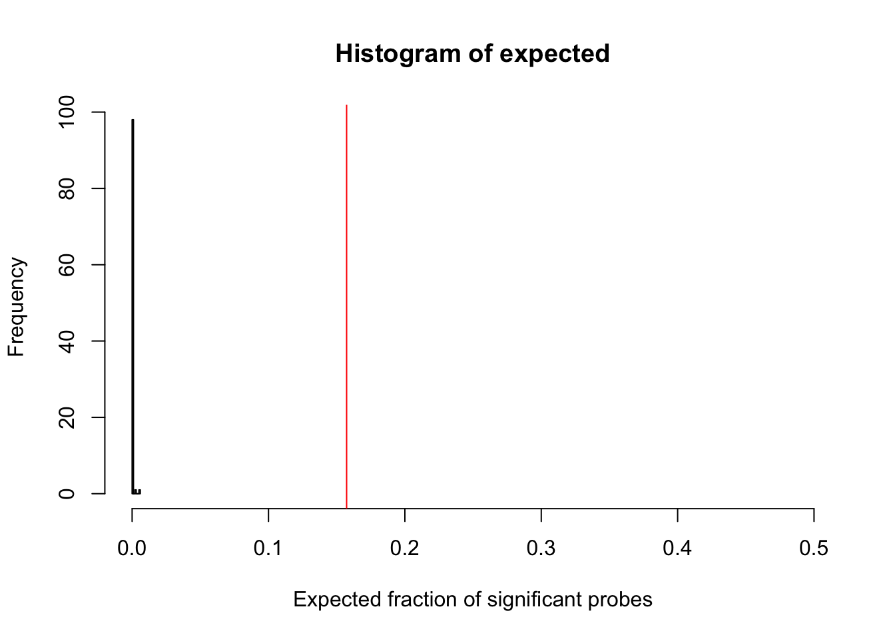
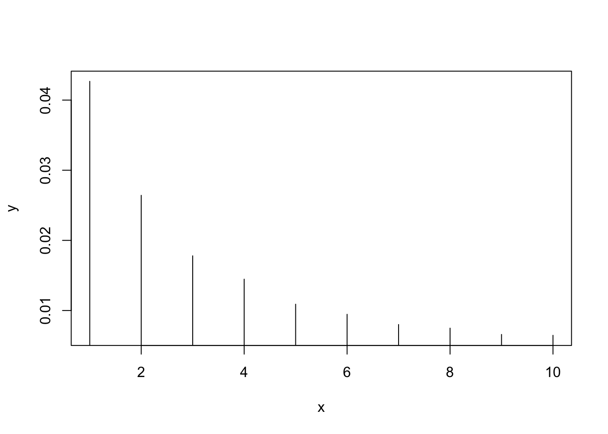
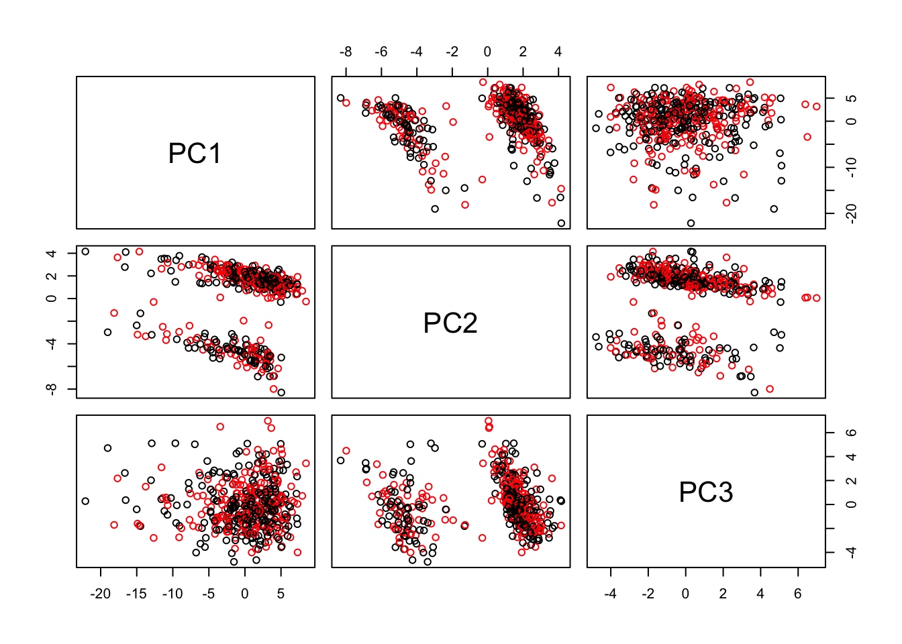
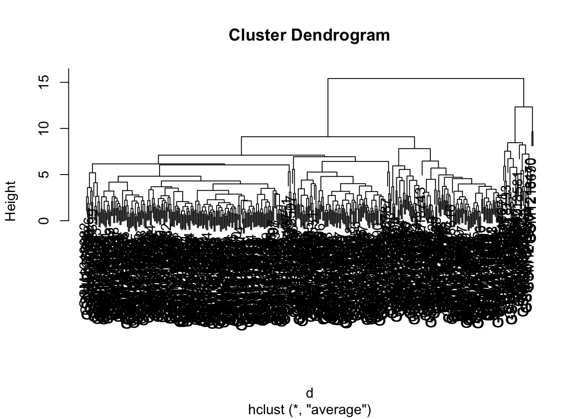

GSE50409
Analysis
Automatically download the data from GEO
Obtain the matrix of beta values where each row corresponds to probes and each column corresponds to samples
matrix <- exprs(gse50409[[1]])
head(rownames(matrix))## [1] "cg00000292" "cg00002426" "cg00003994" "cg00005847" "cg00006414"
## [6] "cg00007981"head(colnames(matrix))## [1] "GSM1218373" "GSM1218374" "GSM1218375" "GSM1218376" "GSM1218377"
## [6] "GSM1218378"- How many samples and how many probes do you have in the data?
Number of probes:
probes <- rownames(matrix)
length(probes)## [1] 27578Number of samples:
samplesNames <- colnames(matrix)
length(samplesNames)## [1] 428- How are the beta values distributed?
hist(matrix, breaks=1000)
- Do your probes have names?
These are the probe names:
head(rownames(matrix))## [1] "cg00000292" "cg00002426" "cg00003994" "cg00005847" "cg00006414"
## [6] "cg00007981"- Do you have annotation that tells the coordinate (in hg19) of each probe and its genomic features (such as related gene name)?
annotation <- getGEO("GPL13534", destdir = "./")## Using locally cached version of GPL13534 found here:
## .//GPL13534.softannotation <- Table(annotation)
# setDT(annotation)
# Now match the rows in annotation that are present in our data
commonProbes <- intersect(annotation$ID, rownames(matrix))Number of probes for which hg19 annotation is available: 25978
i <- match(commonProbes, annotation$ID)
annotation <- annotation[i, ]
i <- match(commonProbes, rownames(matrix))
matrix <- matrix[i,]
stopifnot(all(rownames(matrix) == annotation$ID))
head(annotation)## ID Name AddressA_ID
## 97 cg03515901 cg03515901 37604301
## 199 cg08455548 cg08455548 21731485
## 359 cg20401549 cg20401549 66684405
## 433 cg00029931 cg00029931 45616329
## AlleleA_ProbeSeq AddressB_ID
## 97 AACCAACTCRACTATTAACAACTCTATTAACAAAACTATTTATCTTTCTC NA
## 199 TTATATACACAAAATTTTACTCAAAAAAACTAACAACCCRAAAACRACRC NA
## 359 CAAACRCCAATTTCACTTTCTATTTTTAAACTTCACTTTTACTAAACCAC NA
## 433 TCAACRTTTCRTCACTTTATCTCTTTTAATAAACTCTACTACRTAATAAC NA
## AlleleB_ProbeSeq Infinium_Design_Type Next_Base Color_Channel
## 97 II
## 199 II
## 359 II
## 433 II
## Forward_Sequence
## 97 GTCACTGAGATAACCAGCTCGGCTGTTAGCAACTCTGTTAGCAAAGCTGTTTGTCTTTCT[CG]GAAACAACAGGTGAGAATTCCCCTTACAGACCTGCCCATGCTTTCTAAAGTGGCTCTCCC
## 199 CGAGGAGAACATTGTATGCACAGGGTTTTGCTCAGGAAAGCTAGCAGCCCGAAAGCGGCG[CG]TTTTCTTCAGCAGCGGGTCCCGCACGCGAGAGTGCTGCCAGCACGCTTTCTGCCTCCTTC
## 359 CCTCTCCTCACCAAACGCCAATTTCACTTTCTATTTTTGAGCTTCACTTTTGCTGAGCCA[CG]CCCTCCCTGTCCCCGGGCCACCCAGCCTCCCCATCTTCCGGGTTTGGGTGCAGCAACGCG
## 433 GCTTCCCTCGGGGACGGGGAGGCCAGAGGATCTGGGAAAAACACTGCTCCCTTCACTGAA[CG]CCACTACGTAGCAGAGTCCACCAAAAGAGATAAAGTGACGAAACGTTGAAAGCTGCGGGG
## Genome_Build CHR MAPINFO
## 97 37 Y 3447157
## 199 37 Y 4867968
## 359 37 Y 7141681
## 433 37 X 100645741
## SourceSeq Chromosome_36
## 97 ACCAGCTCGGCTGTTAGCAACTCTGTTAGCAAAGCTGTTTGTCTTTCTCG Y
## 199 CGCGCCGCTTTCGGGCTGCTAGCTTTCCTGAGCAAAACCCTGTGCATACA Y
## 359 AAACGCCAATTTCACTTTCTATTTTTGAGCTTCACTTTTGCTGAGCCACG Y
## 433 CGCCACTACGTAGCAGAGTCCACCAAAAGAGATAAAGTGACGAAACGTTG X
## Coordinate_36 Strand Probe_SNPs Probe_SNPs_10 Random_Loci
## 97 3507157 R NA
## 199 4927968 R NA
## 359 7201681 R NA
## 433 100532397 F NA
## Methyl27_Loci UCSC_RefGene_Name UCSC_RefGene_Accession
## 97 TRUE TGIF2LY;TGIF2LY NM_139214;NM_139214
## 199 TRUE PCDH11Y NM_032971
## 359 TRUE PRKY NR_028062
## 433 TRUE RPL36A NM_021029
## UCSC_RefGene_Group UCSC_CpG_Islands_Name
## 97 5'UTR;1stExon
## 199 TSS1500 chrY:4867956-4868586
## 359 TSS1500 chrY:7141521-7143224
## 433 TSS1500 chrX:100645780-100646107
## Relation_to_UCSC_CpG_Island Phantom DMR Enhancer HMM_Island
## 97 NA
## 199 Island NA Y:4927957-4928608
## 359 Island NA Y:7201522-7203224
## 433 N_Shore NA
## Regulatory_Feature_Name Regulatory_Feature_Group DHS RANGE_START
## 97 NA 3447157
## 199 NA 4867968
## 359 NA 7141681
## 433 X:100645391-100646487 Promoter_Associated NA 100645741
## RANGE_END RANGE_GB SPOT_ID
## 97 3447280 NC_000024.9
## 199 4868091 NC_000024.9
## 359 7141804 NC_000024.9
## 433 100645864 NC_000023.10
## [ reached getOption("max.print") -- omitted 2 rows ]- Do you know which samples correspond to healthy individuals, and which samples correspond to the sick ones?
disease <- pData(phenoData(gse50409[[1]]))
as.character(disease[1:20,1])## [1] "4763072011_A: Bladder cancer case"
## [2] "4763072011_B: Control"
## [3] "4763072011_C: Control"
## [4] "4763072011_D: Control"
## [5] "4763072011_E: Control"
## [6] "4763072011_F: Bladder cancer case"
## [7] "4763072011_G: Control"
## [8] "4763072011_H: Bladder cancer case"
## [9] "4763072011_I: Control"
## [10] "4763072011_L: Bladder cancer case"
## [11] "4763072021_A: Control"
## [12] "4763072021_B: Bladder cancer case"
## [13] "4763072021_D: Control"
## [14] "4763072021_E: Control"
## [15] "4763072021_F: Control"
## [16] "4763072021_G: Bladder cancer case"
## [17] "4763072021_H: Control"
## [18] "4763072021_I: Bladder cancer case"
## [19] "4763072021_J: Control"
## [20] "4763072021_K: Control"- For each probe compute a t-test to verify if the distributions of beta values within the probe significantly differ between the two groups.
sick <- which(disease$source_name_ch1 == "Bladder cancer case")
control <- which(disease$source_name_ch1 != "Bladder cancer case")
t.test(matrix[1,control], matrix[1,sick])##
## Welch Two Sample t-test
##
## data: matrix[1, control] and matrix[1, sick]
## t = -2.3922, df = 424.64, p-value = 0.01718
## alternative hypothesis: true difference in means is not equal to 0
## 95 percent confidence interval:
## -0.033361664 -0.003266461
## sample estimates:
## mean of x mean of y
## 0.7869156 0.8052296- From the t-test, obtain the p value.
pvals <- apply(matrix,1,function(x) {t.test(x[sick],x[control])$p.value})
hist(pvals)
observed <- mean(pvals < 0.05)
set.seed(123)
## >>> PG: groups wasn't defined (created dummy object)
groups <- sample(0:1, ncol(matrix), replace = TRUE)
expected <- numeric(100)
## >>> PG: decreased number of permutations
for (iteration in 1:2) {
groupsRandom <- sample(groups)
pvalsRandom <- apply(matrix[1:1000,],1,function(x) {t.test(x ~ groupsRandom)$p.value})
expected[iteration] <- mean(pvalsRandom < 0.05)
print(iteration)
}## [1] 1
## [1] 2hist(expected, xlim=c(0, 0.5), xlab="Expected fraction of significant probes")
abline(v=observed, col="red")
mean(observed < expected)## [1] 0- Plot the distribution of p values. What is the expected distribution? How dows it differ from what you get?
hist(pvals, breaks = 1000)
#The p-value graph should be distributed around zero. What we got appears to be the expected result, because in the graph it is clear that frequency of probes with p-value zero or very close to it is the highest, while the frequency of probes with bigger p-value plummets extremely.- Performance-wise, how long will it take to compute the test for all probes?
system.time(apply(matrix,1,function(x) {t.test(x[sick],x[control])$p.value}))## user system elapsed
## 6.150 0.134 6.296PCA
source("https://bioconductor.org/biocLite.R")## Bioconductor version 3.6 (BiocInstaller 1.28.0), ?biocLite for helpbiocLite("impute")## BioC_mirror: https://bioconductor.org## Using Bioconductor 3.6 (BiocInstaller 1.28.0), R 3.4.3 (2017-11-30).## Installing package(s) 'impute'##
## The downloaded binary packages are in
## /var/folders/__/2xvh2pm91sb9bqt2720yn0740000gn/T//Rtmp0hWssg/downloaded_packages## Old packages: 'backports', 'bookdown', 'broom', 'callr', 'cowplot',
## 'curl', 'DBI', 'dendextend', 'devtools', 'doFuture', 'DT',
## 'estimability', 'forcats', 'foreach', 'fpc', 'future', 'git2r',
## 'globals', 'gridGraphics', 'haven', 'hexbin', 'Hmisc', 'hms',
## 'htmlTable', 'htmlwidgets', 'httpuv', 'iterators', 'kableExtra',
## 'knitr', 'listenv', 'lsmeans', 'lubridate', 'magick', 'MASS', 'mclust',
## 'memuse', 'mgcv', 'microbenchmark', 'multcomp', 'multipanelfigure',
## 'mvtnorm', 'nlme', 'openssl', 'pillar', 'psych', 'quantmod', 'quantreg',
## 'raster', 'RcppArmadillo', 'RcppEigen', 'RcppParallel', 'registry',
## 'reprex', 'rmarkdown', 'robustbase', 'rpart', 'rprojroot', 'selectr',
## 'seriation', 'shades', 'shinyjs', 'sp', 'tidyverse', 'timeDate',
## 'tseries', 'viridis', 'xml2', 'xts', 'yaml', 'zoo'library(impute)
imputed <- impute.knn(matrix)## Cluster size 25978 broken into 18692 7286
## Cluster size 18692 broken into 3173 15519
## Cluster size 3173 broken into 1055 2118
## Done cluster 1055
## Cluster size 2118 broken into 1491 627
## Done cluster 1491
## Done cluster 627
## Done cluster 2118
## Done cluster 3173
## Cluster size 15519 broken into 11203 4316
## Cluster size 11203 broken into 5966 5237
## Cluster size 5966 broken into 3217 2749
## Cluster size 3217 broken into 965 2252
## Done cluster 965
## Cluster size 2252 broken into 1010 1242
## Done cluster 1010
## Done cluster 1242
## Done cluster 2252
## Done cluster 3217
## Cluster size 2749 broken into 760 1989
## Done cluster 760
## Cluster size 1989 broken into 1073 916
## Done cluster 1073
## Done cluster 916
## Done cluster 1989
## Done cluster 2749
## Done cluster 5966
## Cluster size 5237 broken into 2428 2809
## Cluster size 2428 broken into 1010 1418
## Done cluster 1010
## Done cluster 1418
## Done cluster 2428
## Cluster size 2809 broken into 2285 524
## Cluster size 2285 broken into 781 1504
## Done cluster 781
## Cluster size 1504 broken into 1031 473
## Done cluster 1031
## Done cluster 473
## Done cluster 1504
## Done cluster 2285
## Done cluster 524
## Done cluster 2809
## Done cluster 5237
## Done cluster 11203
## Cluster size 4316 broken into 2324 1992
## Cluster size 2324 broken into 937 1387
## Done cluster 937
## Done cluster 1387
## Done cluster 2324
## Cluster size 1992 broken into 1323 669
## Done cluster 1323
## Done cluster 669
## Done cluster 1992
## Done cluster 4316
## Done cluster 15519
## Done cluster 18692
## Cluster size 7286 broken into 3238 4048
## Cluster size 3238 broken into 1994 1244
## Cluster size 1994 broken into 854 1140
## Done cluster 854
## Done cluster 1140
## Done cluster 1994
## Done cluster 1244
## Done cluster 3238
## Cluster size 4048 broken into 2044 2004
## Cluster size 2044 broken into 1020 1024
## Done cluster 1020
## Done cluster 1024
## Done cluster 2044
## Cluster size 2004 broken into 1 2003
## Done cluster 1
## Cluster size 2003 broken into 852 1151
## Done cluster 852
## Done cluster 1151
## Done cluster 2003
## Done cluster 2004
## Done cluster 4048
## Done cluster 7286pca <- prcomp(t(imputed$data), scale=FALSE)
x <- 1:10
y <- (pca$sdev / sum(pca$sdev))[1:10]
plot(x, y, type='h')
pairs(pca$x[, 1:3], col=as.factor(groups))
table(annotation$CHR)##
## 1 10 11 12 13 14 15 16 17 18 19 2 20 21 22
## 2750 1015 1654 1453 463 797 772 1128 1482 373 1824 1594 846 293 613
## 3 4 5 6 7 8 9 X Y
## 1451 950 1105 1418 1171 884 978 961 3d <- dist(pca$x[, 1:5])
h <- hclust(d, method="average")
plot(h)
library(limma)##
## Attaching package: 'limma'## The following object is masked from 'package:BiocGenerics':
##
## plotMAage <- rnorm(ncol(matrix), mean=60)
model <- model.matrix(~ 1 + groups + age)
fit <- lmFit(matrix, model)
fit <- eBayes(fit)
topTable(fit, coef=2)## logFC AveExpr t P.Value adj.P.Val
## cg08876665 0.005534704 0.04605790 4.047334 0.0000615165 0.9999503
## cg20537992 0.020294519 0.19057726 3.866595 0.0001275730 0.9999503
## cg14166009 -0.031519944 0.39805257 -3.471503 0.0005703576 0.9999503
## cg23517605 0.013269129 0.18116184 3.408071 0.0007164024 0.9999503
## cg25959506 0.005880076 0.05807848 3.402445 0.0007309133 0.9999503
## cg05512756 0.029712498 0.34219486 3.299693 0.0010491571 0.9999503
## cg23320056 0.004265137 0.08123674 3.261441 0.0011974819 0.9999503
## cg02770814 0.004279779 0.03526990 3.213979 0.0014085155 0.9999503
## cg20725021 -0.010555023 0.75687332 -3.077474 0.0022222448 0.9999503
## cg11469778 -0.035381894 0.33545153 -3.004577 0.0028162930 0.9999503
## B
## cg08876665 -0.4572075
## cg20537992 -1.1483814
## cg14166009 -2.5562315
## cg23517605 -2.7689461
## cg25959506 -2.7876330
## cg05512756 -3.1237759
## cg23320056 -3.2464131
## cg02770814 -3.3966851
## cg20725021 -3.8171612
## cg11469778 -4.0345576# => rezultatas: reiksmingai pakite probai del ligos, atsizvelgiant i amziaus ir lyties skirtumus!
# amzius: https://dnamage.genetics.ucla.edu, kraujo kompozicija